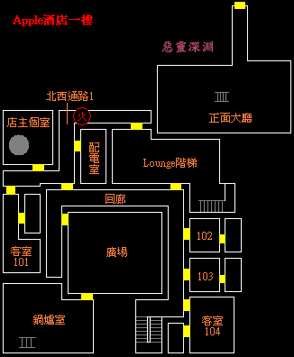
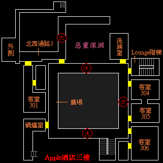
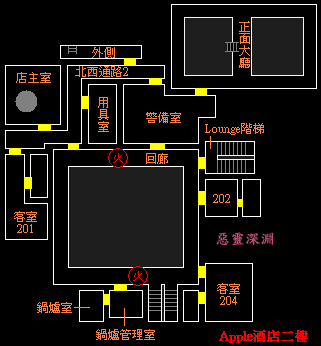
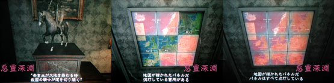
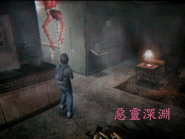

|
惡靈古堡Outbreak----地圖攻略∼獄炎Easy/Normal
|
此頁面含有日文編碼文字
|
本篇攻略的道具配置以"Normal"為主 ，有時會因為選擇的角色和機率不同而有些許改變；''關於SpecialItems和達成率的詳細介紹，請參
（兩位夥伴會在開始不久的一樓鍋爐室分開，夥伴1會隨玩家往三樓，夥伴2則因為爬梯壞掉留在一樓 ，稍後從廣場往回廊方向離去）
 Apple酒店一樓──廣場 / 鍋爐室 開始的位置在廣場，從廣場通往回廊的門因為被擋住了，只好進入鍋爐室。 鍋爐室裡消防人員因為氣爆身亡倒在中央地上，調查後從他的無線電中聽到「正面大廳」的訊息。他身上的 ＂Charlie的ID大牌＂是可 以增加達成率的東西，不過要攜帶到過關才算，所以除了Yoko以外，其他角色還是好好考慮吧。由爬梯道三樓，其中一位夥伴在此分 開。 廣場：地圖、綠色藥草。 鍋爐室：鐵棒、Charlie的ID大牌。 達成率：MAP入手、帶著Charlie的ID大牌過關、啟動「無線電呼叫」。
 Apple酒店三樓──鍋爐室 / 廣場 / 北西通路3 / 客室301 / 外側 三樓鍋爐室同樣有一個＂Ren的ID大牌＂，也是必須帶到破關才有用的道具。 經過廣場到北西通路3，由窗口爬到外側，最好先解決附近的一隻烏鴉，然後沿著外筵小心翼翼的攀走過去。轉彎後的第一個窗戶會定 時噴出火燄，等火焰噴玩再過去，雖然這附近也有烏鴉，不過通常會被噴出的火焰燒死，就算沒有也不用擔心，可能會被攻擊，但是 攻擊的間隔很長，不至於墜落。 鍋爐室：Ren的ID大牌。 廣場：手槍。 北西通路3：藍色藥草。 客室301：紅色藥草、鐵棒。 外側：綠色藥草。 達成率：帶著Ren的ID大牌過關、帶著兩者的ID大牌過關。
 Apple酒店二樓──外側 / 北西通路2 / 用具室 / 客室201 / 回廊 / 鍋爐管理室 / 鍋爐室 / 警備室 / 店主室 北西通路2此處行動會開始分歧，並不一定要先去哪，只要可以拿到銀浮雕鑰匙、紅寶石即可，以下流程僅供參考。 通往警備室的門是鎖住的，若是想早點和另一位夥伴會合，就先前往回廊，到鍋爐室去拿警備室的卡片鑰匙，即可打開警備室。一般 而言在警備室會碰上另一位夥伴，而且他的身上帶著金浮雕鑰匙，向他要來之後往店主室。 店主室的地板破了一個大洞，將木箱推下去，就形成的通往一樓店主個室的便道了。 用具室：手槍彈、電池（無用處別拿）、45AUTO彈、藍色藥草、綠色藥草（Alyssa）、用務員的日誌。 客室201：抗Virus劑、綠色藥草、急救噴霧（鎖住的浴室，破壞即開）。 鍋爐管理室：散彈。 鍋爐室：綠色藥草、警備室的卡片鑰匙。 警備室：急救噴霧、散彈、手槍彈、避難裝置設置手冊。 店主室：手槍彈。 達成率：推落二樓店主室的木箱、取得「用務員的日誌」、取得「避難裝置設置手冊」、使用卡片鑰匙打開警備室、打開二樓用具室 的置物櫃（Alyssa）。
Apple酒店一樓──店主個室 / 北西通路1 / 客室101 / 配電室 / 回廊 / 客室102 / 客室103 / 客室104 / Lounge階梯 店主個室中有一份「住客名簿的複本」，和客室101的「帳單」相對照，找出密碼，數入客室101牆上的保險櫃，取得銀浮雕鑰匙。 （密碼對照方法請看最下方的疑難雜解） 用金浮雕鑰匙打開配電室後鑰匙就不用了，還沒拿到鑰匙的玩家稍後再來即可。配電室裡要調整配電盤恢復電源，恢復方法是使所有 按鈕都亮，但是操作配電盤有時間限制，超時就必須重來。 用銀浮雕鑰匙打開往回廊的門（還需要用勿丟）， 店主個室：水泥塊、住客名簿的複本。 北西通路1：散彈槍、紅色藥草、。 客室101：藍色藥草、急救噴霧、帳單、銀浮雕鑰匙。 配電室：散彈、綠色藥草、電池（無用處別拿）。 回廊：手槍、水泥塊、45AUTO彈（地圖下方階梯1樓往2樓處）。 客室102：硫酸彈（鎖住的浴室，破壞即開）、住客的Memo1。 客室103：手槍彈、綠色藥草。 客室104：住客的Memo2、綠色藥草、鐵棒。 Lounge階梯：散彈、水泥塊。 北西通路1（從Lounge階梯過去這一段）：散彈槍。 達成率： 解除客室101保險櫃的鎖、恢復一樓配電室的緊急電源、取得「住客的等候名單」、取得「帳單」、取得「住客的Memo1」 、取得「住客的Memo2」、使用金浮雕鑰匙、使用銀浮雕鑰匙。
Apple酒店二樓──客室202 / 客室204 / 回廊 客室204雖然有重要道具，不過通常都被夥伴拿走了，若必須自己拿，步驟請參考最下方。 從此處的回廊通往警備室的門，夥伴2會幫忙打開，而且會留在警備室，記得跟他拿金浮雕鑰匙，如果門沒打開，就要輸入密碼來打開 （或從另一側打開），密碼在三樓洗滌室（警備員的手帳）。 客室202：抗Virus劑（鎖住的浴室，破壞即開）、包丁。 客室204：紅色藥草、住客的Memo3、金浮雕鑰匙。 達成率：取得「住客的Memo3」、解開歐洲地圖的謎題機關（取得金浮雕鑰匙）。
Apple酒店三樓──洗滌室 / 客室304 / 客室305 / 客室306 洗滌室的警備員的手帳寫有警備室的密碼。 客室304和客室305之間的牆破壞之後可以爬行過去，305室裡的強力武器榴彈槍不要錯過了。打開反鎖的門往客室306，拿取紅寶石。 洗滌室：用務員的修補Memo、警備員的手帳、藍色藥草。 客室304：散彈、綠色藥草。 客室305：抗Virus劑（大）、 裝填硫酸彈的榴彈槍。 客室306：紅寶石、散彈、紅色藥草。 達成率：破壞304、305號房的牆壁、取得「用務員的修補Memo」、取得「警備員的手帳」、使用銀浮雕鑰匙。
Apple酒店二樓──警備室 / 正面大廳 推開警備室石像旁的書櫃，將紅寶石嵌入石像，如果還沒有去一樓配電室恢復電力，就帶著金浮雕鑰匙去吧。 正面大廳中央有個電動爬梯，恢復電力之後就可以放下到一樓。 正面大廳：散彈、綠色藥草x2、手槍彈。 達成率：輸入密碼打開警備室、打開二樓警備室的隱藏門、使用電動爬梯。
Apple酒店一樓──正面大廳 正面大廳：綠色藥草x2、散彈、鐵棒、急救噴霧。 達成率：啟動「吊掛者出現」、擊倒吊掛者。 疑難解答
一樓用具室置物櫃：Ｓ型； 一樓回廊往Lounge階梯：Ｉ型； 二樓客室201浴室：Ｓ型； 二樓客室202浴室：Ｗ型。 （使用其他種類一樣可以打開，只是快慢的差別）
名單」，找出這個房間的主人，並找到其密碼。以下節錄有用的資訊： アンドリュー・エバンス JIA → A. Evans アンナ・ローウェル BAE → A. Lowell ジョセフ・ウィルツン DCH → J. Wilson トビー・ホイットマン GGF → T. Whitman
、No.3→客室104（中左）、No.4→客室202（左下）。騎士雕塑上的提示文字寫著：「紅色的血染上大地之時，救國 的騎士將打開道路」，也就是說必須使歐洲地圖呈現下圖三的模樣，就能打開騎士雕塑的抽屜，拿到金浮雕鑰匙。

從一樓Lounge階梯打開通往回廊的門； 破壞三樓304室和305室之間的牆壁，並打開305室反鎖的門； 解開圖畫之謎，取得金浮雕鑰匙； 輸入密碼打開從二樓回廊往警備室的門。 在特殊的情況下，例如夥伴死亡或是玩No Partner模式，就必須自己去做這些事了。
會改變方向，攻擊的方式：將下方附近的獵物用舌頭捲起、使用舌頭亂掃攻擊前方。Boss戰開始後附近還會依據 難度不同而分佈數隻Licker，不適合打持久戰。玩家隨時都可以離開此處去進行補給。 首先在觸動吊掛者出現時最好不要從正中央過去，以免一開始就被攻擊，戰鬥開始後，可以直接衝過去在靠近出 口的地方用散彈槍或手槍攻擊（這裡不容易被Licker圍攻），如果有榴彈槍就要在接近其下方的地方向上攻擊。
 除了從背面接近他外，也可以站在上圖處，也就是靠近櫃檯轉角，這裡吊掛者不會主動攻擊，但是卻可以使榴彈 槍向上攻擊時確實擊中，一旦攻擊命中，吊掛者會使用舌頭亂掃來反擊，趕緊後退或使用像Yoko或是Jim等人的 特殊動作來迴避。擊敗吊掛者之後，從打開的出口出去遊戲才算結束。 未經許可禁止轉載連結 |
||||||||||||||||||||||||||||||
惡靈深淵Biohazard Abyss http://98.to/coolbio